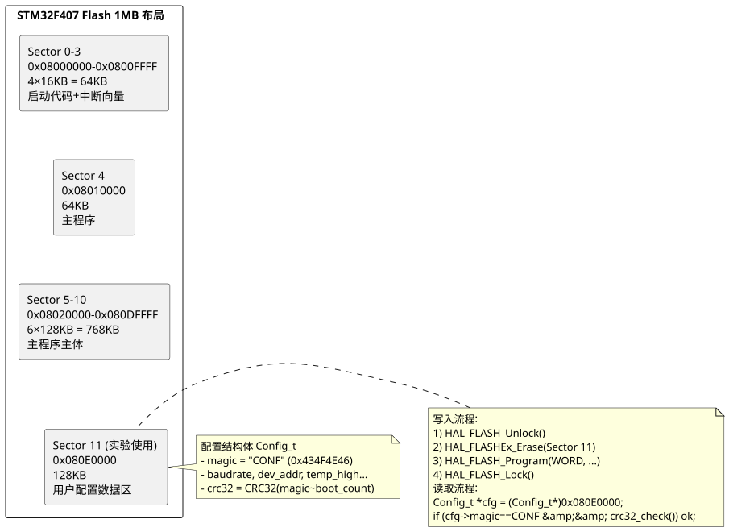

实验12 STM32 Flash 数据存取
实际项目中常需保存用户配置（校准参数、设备地址、阈值上下限、累计电能等），断电或重启后仍能读回。STM32F407 内置 1 MB Flash，除存放主程序外，可划出末尾空闲扇区作为"用户数据区"实现掉电存储。本实验使用 HAL 库的 HAL_FLASHEx_Erase 与 HAL_FLASH_Program 读写 Sector 11（0x080E0000，128 KB），并采用 MAGIC 魔数 + CRC32 校验机制保证数据完整性。掌握这一技术后，可省去外挂 EEPROM 芯片，降低系统成本。完整工程源码见 /code/stm32f407/12-flash-config/。
一、实验目的
- 理解 STM32F407 内部 Flash 的扇区布局与读写特性（断电不丢失、写前必擦、整扇区擦除）。
- 掌握 HAL_FLASH_Unlock/Erase/Program/Lock 的完整写入流程。
- 掌握通过指针直接读取 Flash 内容的方法（Flash 映射到 CPU 地址空间，可当 ROM 读）。
- 掌握 MAGIC 魔数 + CRC32 校验机制，识别"首次上电"与"配置损坏"两种异常状态。
- 理解 Flash 擦写寿命限制（约 10 万次）与磨损均衡策略。
二、知识点
- Flash 物理特性：① 断电不丢失；② 写入前必须先擦除；③ 擦除只能整扇区进行；④ 擦除后所有位变 1；⑤ 写入只能把 1 变 0（不能反向）；⑥ 单扇区擦写寿命约 10 万次。
- STM32F407 扇区布局：1 MB 版本分 12 个扇区，Sector 0-3 各 16 KB，Sector 4 为 64 KB，Sector 5-11 各 128 KB。推荐用 Sector 11（0x080E0000，128 KB）作用户数据区。
- 读 Flash：Flash 映射到 CPU 地址空间（0x08000000 起），可直接以指针访问，无需解锁，速度等同 SRAM 读取。
- 写 Flash 流程：①
HAL_FLASH_Unlock()解锁控制寄存器；②HAL_FLASHEx_Erase()擦除目标扇区；③HAL_FLASH_Program()按字/半字/字节写入；④HAL_FLASH_Lock()重新加锁。 - MAGIC 魔数：在配置结构体首字段放固定值（如 0x434F4E46 = "CONF"），开机读取时先比对 magic，匹配则视为已写入有效配置，否则视为首次启动填默认值。
- CRC32 校验：在结构体末尾加
uint32_t crc字段，写入前对结构体前面字段计算 CRC32 填入；读取时重新计算 CRC 并与存储值比对，不一致则视为数据损坏（断电、强电磁干扰等），恢复默认值。 - 擦除期间禁止中断：擦除时 Flash 不可读，CPU 取指会停顿；若此时触发中断（向量表在 Sector 0），程序会跑飞。建议擦除前
__disable_irq()，结束后__enable_irq()。 - 磨损均衡：若每秒保存一次，单扇区寿命 10 万次仅能用 27 小时。应改为"环形页写"：Sector 11 分 32 页（每页 4 KB），每次写下一页未用空间，写满再整体擦除，寿命可达 320 万次。
三、硬件清单
| 序号 | 器材 | 规格 | 数量 | 备注 |
|---|---|---|---|---|
| 1 | STM32F407VET6 板 | 1 MB Flash 版本 | 1 | VE/VG 均可 |
| 2 | ST-Link V2 调试器 | SWD 接口 | 1 | 烧录调试 |
| 3 | USB 线 | — | 1 | 串口观察日志 |
| 4 | PC | 串口助手 + ST-Link Utility | 1 | — |
四、电路连接
STM32F407 板载 USB 转串口 CH340，USART1 (PA9=TX, PA10=RX) 直连 PC USB。ST-Link V2 通过 SWD（SWCLK=PA14, SWDIO=PA13）连接板载调试口。本实验使用内部 Flash，无需外接任何存储芯片。

查看 PlantUML 源码
@startuml
skinparam defaultFontName "Microsoft YaHei"
skinparam backgroundColor #ffffff
top to bottom direction
rectangle "STM32F407 Flash 1MB 布局" {
rectangle "Sector 0-3\n0x08000000-0x0800FFFF\n4×16KB = 64KB\n启动代码+中断向量" as S0
rectangle "Sector 4\n0x08010000\n64KB\n主程序" as S4
rectangle "Sector 5-10\n0x08020000-0x080DFFFF\n6×128KB = 768KB\n主程序主体" as S5
rectangle "Sector 11 (实验使用)\n0x080E0000\n128KB\n用户配置数据区" as S11
S0 -[hidden]down- S4
S4 -[hidden]down- S5
S5 -[hidden]down- S11
}
note right of S11
配置结构体 Config_t
- magic = "CONF" (0x434F4E46)
- baudrate, dev_addr, temp_high...
- crc32 = CRC32(magic~boot_count)
end note
note left of S11
写入流程:
1) HAL_FLASH_Unlock()
2) HAL_FLASHEx_Erase(Sector 11)
3) HAL_FLASH_Program(WORD, ...)
4) HAL_FLASH_Lock()
读取流程:
Config_t *cfg = (Config_t*)0x080E0000;
if (cfg->magic==CONF && crc32_check()) ok;
end note
@enduml五、代码框架
5.1 完整工程：Config 结构体 + MAGIC + CRC32 校验
工程 /code/stm32f407/12-flash-config/main.c。STM32CubeMX 配置 USART1（printf 输出日志），Flash 默认配置（无需特殊外设初始化）。
/* main.c - STM32F407 内部 Flash 掉电存储配置
* 存储 Sector 11 (0x080E0000, 128 KB)
* 编译环境：STM32CubeMX + HAL 库 + MicroLIB
*/
#include "stm32f4xx_hal.h"
#include <stdio.h>
#include <string.h>
#include <stdint.h>
#define CONFIG_ADDR 0x080E0000UL
#define CONFIG_SECTOR FLASH_SECTOR_11
#define CONFIG_MAGIC 0x434F4E46UL /* "CONF" ASCII */
extern UART_HandleTypeDef huart1;
/* ---------- 1. 配置结构体 ---------- */
typedef struct __attribute__((packed)) {
uint32_t magic; /* 魔数：标识是否已写入有效配置 */
uint32_t baudrate; /* 串口波特率 */
uint8_t dev_addr; /* Modbus 设备地址 1-247 */
uint8_t reserved1;
uint16_t reserved2;
float temp_high; /* 温度上限阈值 */
float temp_low; /* 温度下限阈值 */
uint32_t energy_kwh_x10; /* 累计电能 ×10 倍（避免 float 不精确） */
uint32_t boot_count; /* 启动次数计数 */
uint32_t crc; /* CRC32 校验 */
} Config_t;
/* 默认配置（首次上电或损坏时使用） */
static const Config_t default_cfg = {
.magic = CONFIG_MAGIC,
.baudrate = 115200,
.dev_addr = 1,
.reserved1 = 0,
.reserved2 = 0,
.temp_high = 50.0f,
.temp_low = 10.0f,
.energy_kwh_x10 = 0,
.boot_count = 0,
.crc = 0, /* 实际计算后填入 */
};
/* ---------- 2. 简易 CRC32（多项式 0xEDB88320，与 zlib 一致） ---------- */
static uint32_t crc32_calc(const uint8_t *data, uint32_t len)
{
uint32_t crc = 0xFFFFFFFF;
for (uint32_t i = 0; i < len; i++) {
crc ^= data[i];
for (int j = 0; j < 8; j++) {
crc = (crc >> 1) ^ (0xEDB88320 & (-(int32_t)(crc & 1)));
}
}
return ~crc;
}
/* ---------- 3. 读取配置（直接指针访问 Flash） ---------- */
int Config_Load(Config_t *out)
{
const Config_t *flash_cfg = (const Config_t *)CONFIG_ADDR;
/* Flash 可直接当 ROM 读，无需解锁 */
if (flash_cfg->magic != CONFIG_MAGIC) {
*out = default_cfg;
return -1; /* 未配置，用默认值 */
}
/* 验证 CRC：计算 magic~boot_count 字段的 CRC，应等于 crc 字段 */
uint32_t calc = crc32_calc((const uint8_t*)flash_cfg,
sizeof(Config_t) - sizeof(uint32_t));
if (calc != flash_cfg->crc) {
*out = default_cfg;
return -2; /* CRC 错，配置损坏 */
}
*out = *flash_cfg;
return 0; /* OK */
}
/* ---------- 4. 写入配置（解锁-擦除-写-加锁） ---------- */
HAL_StatusTypeDef Config_Save(const Config_t *cfg)
{
HAL_StatusTypeDef st;
uint32_t err;
FLASH_EraseInitTypeDef erase;
/* 1) 拷贝到 SRAM 并计算 CRC */
Config_t buf = *cfg;
buf.magic = CONFIG_MAGIC;
buf.crc = crc32_calc((const uint8_t*)&buf,
sizeof(Config_t) - sizeof(uint32_t));
/* 2) 关中断：擦除期间 Flash 不可读，中断向量表读取会跑飞 */
__disable_irq();
/* 3) 解锁 Flash */
st = HAL_FLASH_Unlock();
if (st != HAL_OK) { __enable_irq(); return st; }
/* 4) 擦除 Sector 11 */
erase.TypeErase = FLASH_TYPEERASE_SECTORS;
erase.Banks = FLASH_BANK_1;
erase.Sector = CONFIG_SECTOR;
erase.NbSectors = 1;
erase.VoltageRange = FLASH_VOLTAGE_RANGE_3; /* 2.7-3.6V 供电 */
st = HAL_FLASHEx_Erase(&erase, &err);
if (st != HAL_OK) { HAL_FLASH_Lock(); __enable_irq(); return st; }
/* 5) 按字（32 bit）写入 */
uint32_t *src = (uint32_t*)&buf;
uint32_t addr = CONFIG_ADDR;
uint32_t words = (sizeof(Config_t) + 3) / 4;
for (uint32_t i = 0; i < words; i++) {
st = HAL_FLASH_Program(FLASH_TYPEPROGRAM_WORD,
addr, src[i]);
if (st != HAL_OK) { HAL_FLASH_Lock(); __enable_irq(); return st; }
addr += 4;
}
/* 6) 重新加锁并开中断 */
HAL_FLASH_Lock();
__enable_irq();
return HAL_OK;
}
/* ---------- 5. printf 重定向（用于日志输出） ---------- */
int fputc(int ch, FILE *f)
{
(void)f;
if (ch == '\n') {
uint8_t cr = '\r';
HAL_UART_Transmit(&huart1, &cr, 1, 0xFFFF);
}
uint8_t c = (uint8_t)ch;
HAL_UART_Transmit(&huart1, &c, 1, 0xFFFF);
return ch;
}
/* ---------- 6. 使用示例 ---------- */
Config_t g_cfg;
int main(void)
{
HAL_Init();
SystemClock_Config();
MX_USART1_UART_Init();
printf("\r\n============================\r\n");
printf(" STM32F407 Flash 配置存取实验\r\n");
printf(" Sector 11 @ 0x%08lX, %lu KB\r\n",
(uint32_t)CONFIG_ADDR, (uint32_t)128);
printf("============================\r\n");
/* 开机加载配置 */
int r = Config_Load(&g_cfg);
if (r == 0) {
printf("[OK] 配置加载成功\r\n");
} else if (r == -1) {
printf("[NEW] 首次启动，使用默认配置\r\n");
} else {
printf("[ERR] 配置损坏（错误码 %d），已恢复默认\r\n", r);
}
printf(" baudrate = %lu\r\n", g_cfg.baudrate);
printf(" dev_addr = %u\r\n", g_cfg.dev_addr);
printf(" temp_high = %.1f C\r\n", g_cfg.temp_high);
printf(" temp_low = %.1f C\r\n", g_cfg.temp_low);
printf(" energy_kWh = %.1f\r\n", g_cfg.energy_kwh_x10 / 10.0f);
printf(" boot_count = %lu\r\n", g_cfg.boot_count);
/* 启动计数 +1 并保存 */
g_cfg.boot_count++;
HAL_StatusTypeDef st = Config_Save(&g_cfg);
printf("\n[SAVE] 已保存第 %lu 次启动记录, 状态=%d\r\n",
g_cfg.boot_count, st);
/* 模拟运行中累计电能 */
uint32_t tick = 0;
while (1) {
HAL_Delay(1000);
tick++;
g_cfg.energy_kwh_x10 += 1; /* 每秒+0.1 kWh（演示用） */
/* 每 60 秒保存一次（磨损均衡：避免频繁擦写） */
if (tick % 60 == 0) {
st = Config_Save(&g_cfg);
printf("[AUTO] 60s 自动保存, energy=%.1f kWh, st=%d\r\n",
g_cfg.energy_kwh_x10 / 10.0f, st);
}
}
}
工程要点：
- 对齐：结构体加
__attribute__((packed))紧凑布局，但 ARM 32 位字写入要求地址 4 字节对齐——结构体大小应为 4 的倍数，必要时末尾加保留字段补齐。 - 电压范围：STM32F4 在 2.7-3.6V 供电下擦写用
VOLTAGE_RANGE_3，若用 1.8V 低压需 RANGE_1，但 F407 不支持 1.8V 模式。 - 擦写过程禁止中断：擦除期间 Flash 不可读，CPU 取指会停顿；若擦除期间触发中断（中断向量在 Sector 0），程序会跑飞。建议在
HAL_FLASHEx_Erase前__disable_irq()，结束后__enable_irq()。 - OTA 升级冲突：若用 IAP/OTA 升级，要避免升级过程意外写 Sector 11，导致配置被擦除。建议升级流程先备份 Sector 11 → 擦写主程序 → 恢复配置。
- 磨损均衡：若每秒保存一次，单扇区寿命 10 万次仅能用 27 小时。应改为"环形页写"：Sector 11 分 32 页（每页 4 KB），每次写下一页未用空间，写满再整体擦除，寿命可达 320 万次。
- 结构体版本管理：发布新固件时若改了 Config_t 结构（加字段），老配置会 CRC 错误自动恢复默认——这是设计期望的"安全降级"。但若想保留老数据迁移，需在 magic 中加版本号字段。
对比 STC EEPROM 方案：STC89C52RC 无内部 EEPROM（STC8 系列才有），通常外挂 AT24C02 I²C EEPROM（参见第 33 章密码锁）。STM32 内置 Flash 方案省一颗 EEPROM 芯片，但擦写次数（10 万次）远低于 EEPROM（100 万次），且擦除粒度大（16-128 KB 整扇区）。频繁写入场景仍推荐外挂 EEPROM 或 FRAM。
六、调试要点
- 串口观察日志：本实验所有状态通过 printf 输出，PC 端 115200 8N1 串口助手查看。首次启动应见 "首次启动，使用默认配置"，复位后应见 "配置加载成功"。
- boot_count 累加：每次按复位键，boot_count 应 +1。若始终为 1，说明 Config_Save 失败或写入地址错误。
- ST-Link Utility 查看 Flash：用 ST-Link Utility 连接 → Target → Read Memory Range 0x080E0000，长度 0x100，可看到结构体原始字节（含 magic 0x464F4E43 小端）。
- 断电测试：拔下 USB → 等 5 秒 → 重新上电，boot_count 应保持上一次值 +1，验证掉电不丢失。
- CRC 损坏测试：用 ST-Link Utility 修改 Sector 11 任一字节（如改 crc 字段），重新上电应见 "配置损坏（错误码 -2），已恢复默认"。
- 擦除失败：HAL_FLASHEx_Erase 返回 HAL_ERROR，检查 ① VoltageRange 是否匹配；② Flash 是否已 Unlock；③ Banks 字段（F407 单 bank 应为 FLASH_BANK_1）。
- 写入失败：HAL_FLASH_Program 返回 HAL_ERROR，常见原因 ① 写入地址未擦除（Flash 位仍为 0，写 1 失败）；② 地址未 4 字节对齐（WORD 模式要求）；③ Flash 未 Unlock。
- 程序跑飞：擦除 Sector 11 时若未关中断，中断响应读取向量表（Sector 0）会因 Flash 忙而取指失败 → HardFault。务必
__disable_irq()。 - 主程序占用 Sector 11：若工程主程序 > 896 KB（用了 Sector 11），编译时链接器会警告 "section .text overlaps"。需在 Linker Script 中明确排除 0x080E0000 起的 128 KB 段。
七、思考题
- 简述 Flash 的物理特性：为什么"写前必擦、擦后位变 1、写只能把 1 变 0"？这种特性对编程有什么影响？
- STM32F407 的 Flash 扇区布局是怎样的？为什么选 Sector 11 而不是 Sector 0 作为用户数据区？
- 说明 MAGIC 魔数与 CRC32 校验的作用：开机时 magic 不匹配与 CRC 不匹配分别代表什么状态？程序应如何处理？
- 为什么擦除 Flash 期间必须
__disable_irq()？若不关中断会发生什么？如何在不影响实时性前提下安全擦除？ - 设计一个"环形页写"磨损均衡方案：Sector 11（128 KB）分 32 页每页 4 KB，每次写入下一页未用空间，写满再整体擦除。画出数据结构、写入流程、读取流程、识别"当前有效页"的方法。
- 对比内部 Flash、外挂 AT24C02 EEPROM、FRAM 三种掉电存储方案的优缺点（容量、擦写寿命、擦除粒度、速度、成本），各举一个适用场景。